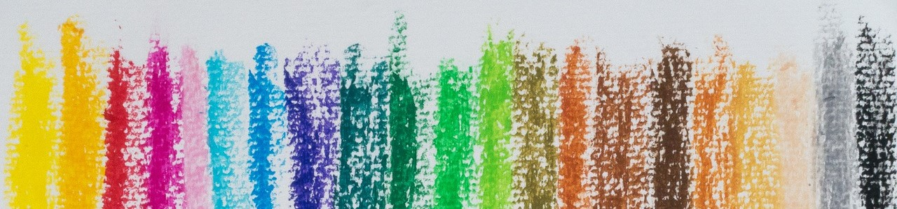
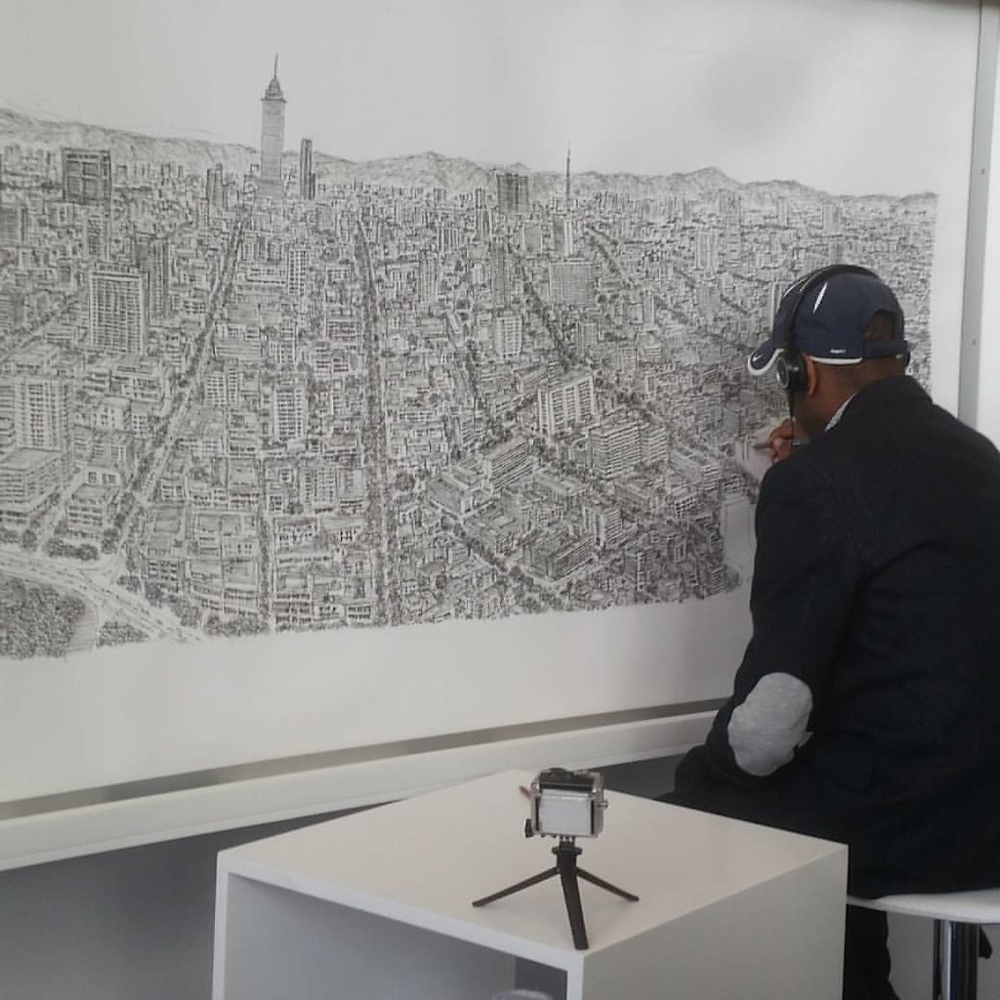
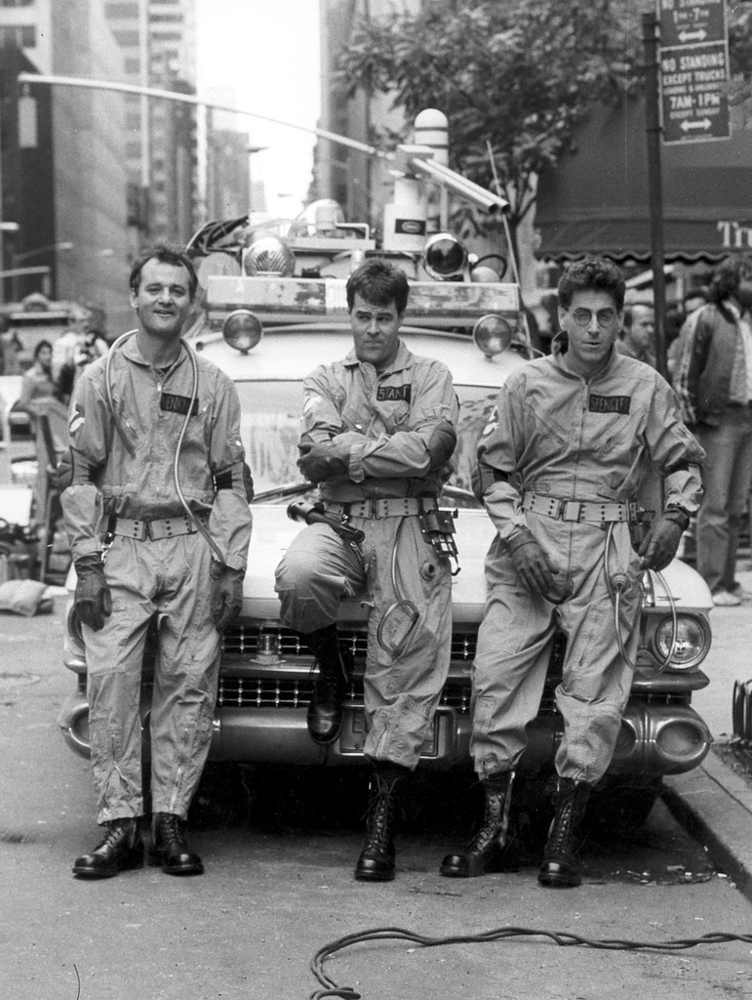

Click on the dots below to meet some members of the Autistic Community!

Mary Temple Grandin is an animal behavior scientist who has worked to make the cattle-industry more humane. She is the recipient of several awards for her work in this area and for her work as an autism rights advocate.

Alonzo Clemons uses wax and clay to sculpt outstanding animal sculptures. He demonstrates his skill at schools in his area and his work has been featured in various television programs. He also competed in the Special Olympics as a powerlifter! He has a condition called Savant Syndrome, which, in this case, means that he has both autism and a genius-level skill in sculpting.
Susan Boyle is a singer from Glasglow who was featured singing a rendition of I Dreamed a Dream from Les Misérables on Britain's Got Talent in 2009. After winning second place on the show she went on to become a bestselling artist both in the US and the UK.
See what she has to say about being autistic here.
See what she has to say about being autistic here.
Stephen Wiltshire specializes in drawing detailed reproductions of cityscapes and classic American cars. He also draws portraits and "snapshots" capturing interesting aspects of his life. He has traveled around the world documenting what he sees via his art and was eventually named a Member of the Order of the British Empire by Queen Elizabeth II for his contributions to the world of art.

Dan Aykroyd has autism and Tourette syndrome. He is a comedian, actor, singer, and (we can't forget) the writer of Ghostbusters. He says that his autism caused an obsession with ghosts and law enforcement, which lead to the idea for his movie.
(From left to right this photo features Bill Murray, Dan Aykroyd, and Harold Ramis)

(From left to right this photo features Bill Murray, Dan Aykroyd, and Harold Ramis)